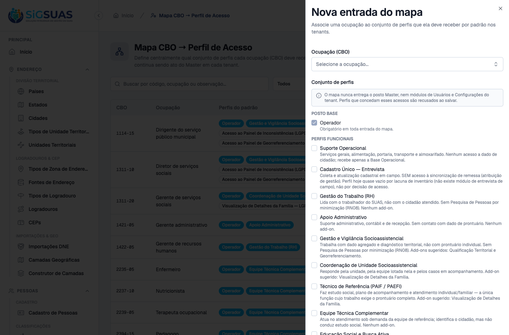
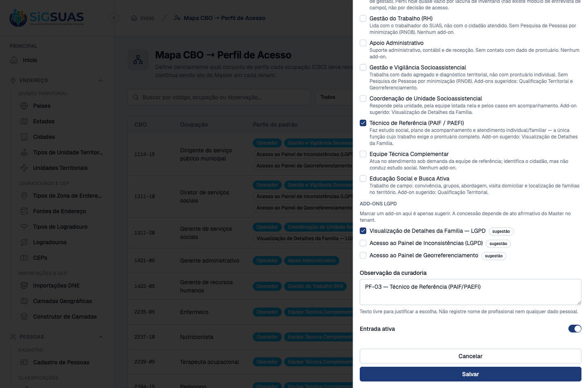
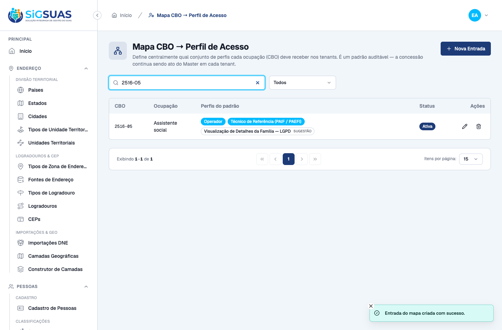
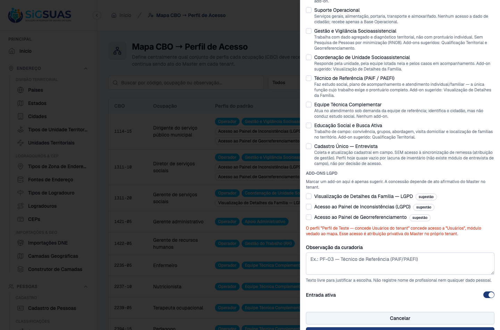
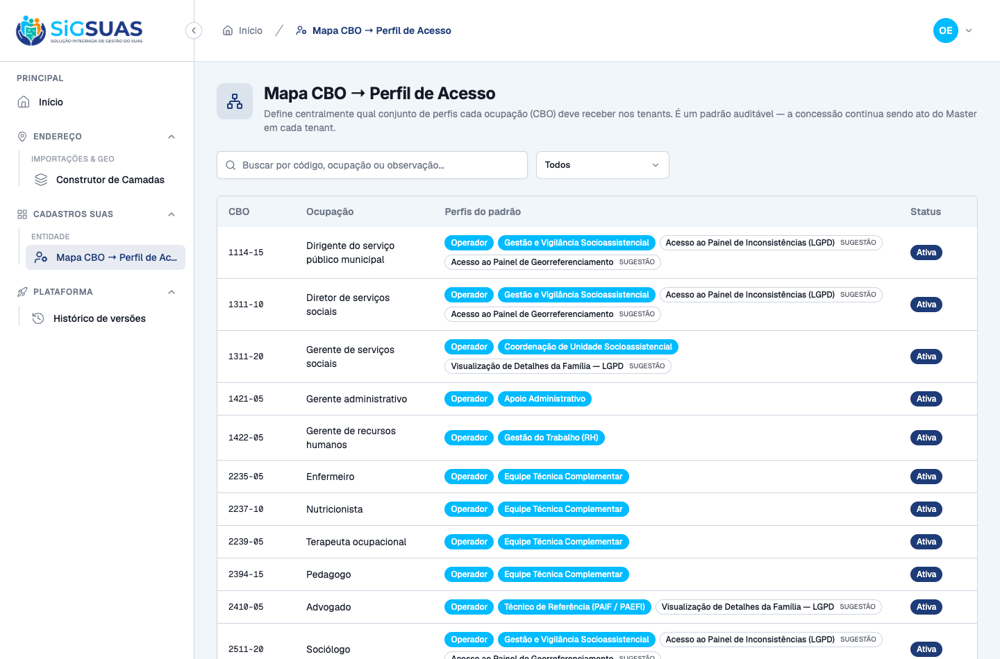
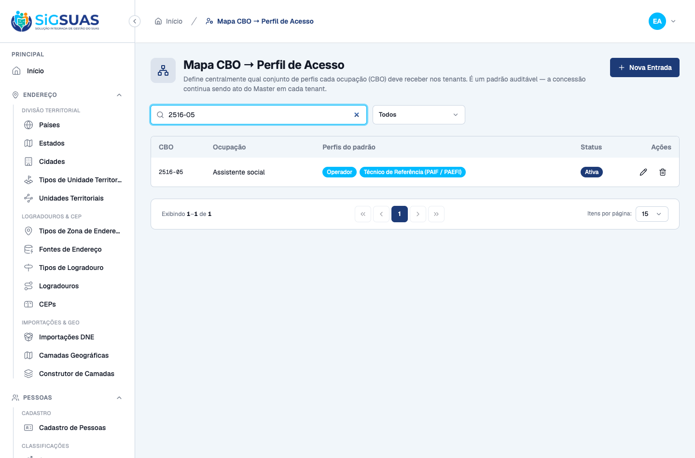
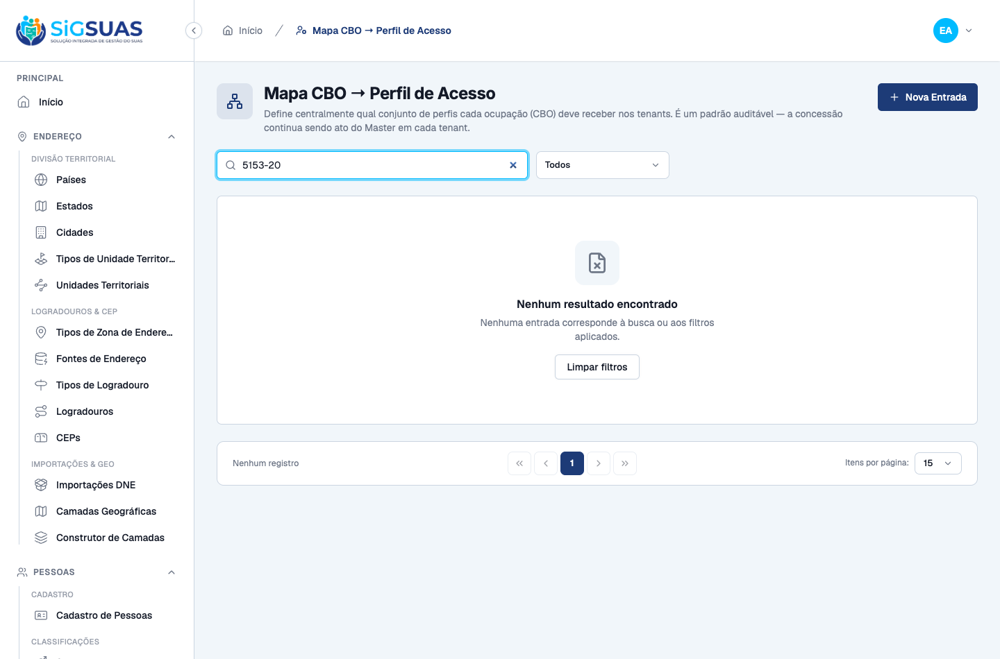
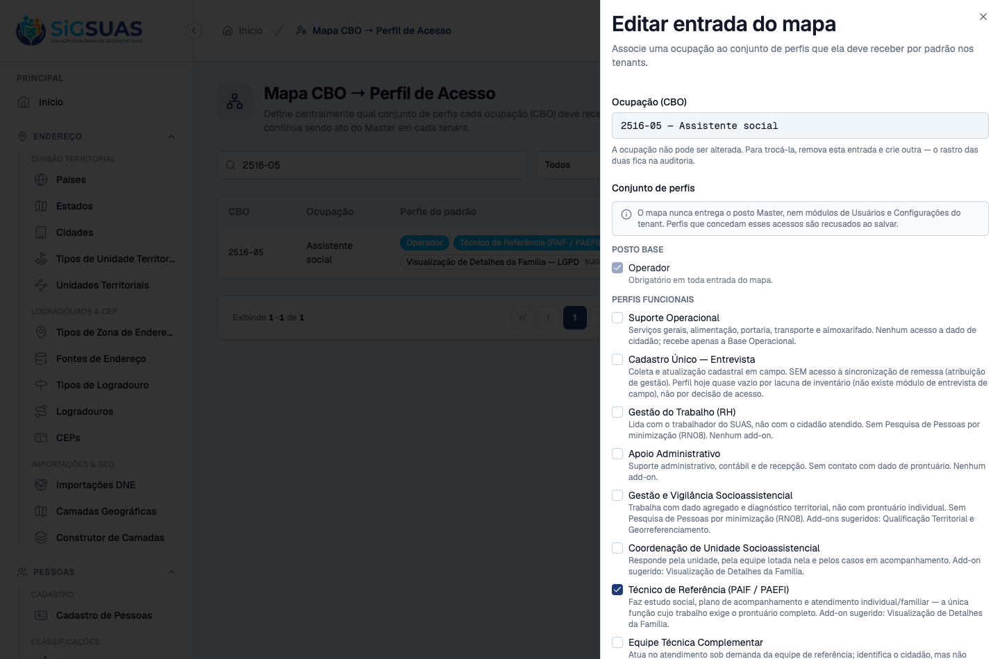
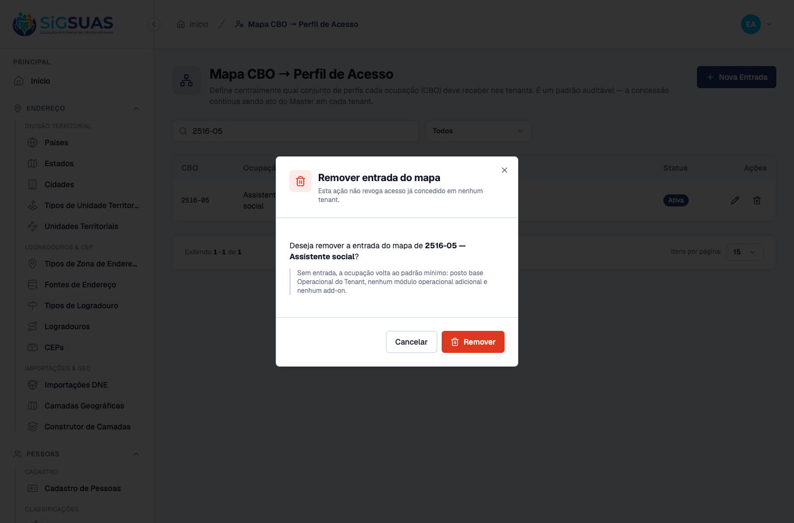
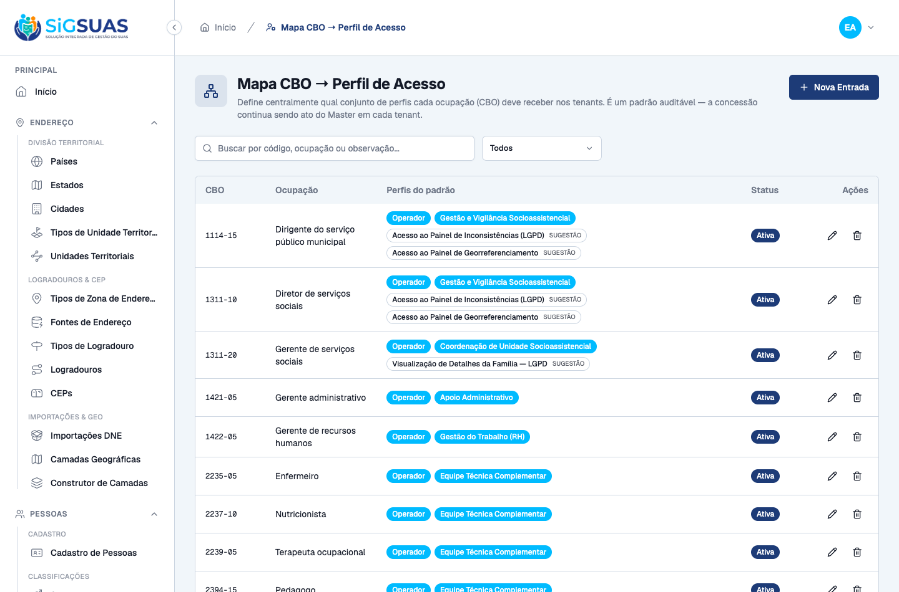

Os 8 critérios de aceite da HU #10343 foram verificados: 5 diretamente no navegador (CA01, CA05, CA06, CA07, CA08), 2 de forma combinada — UI mais chamada direta à API, por serem inalcançáveis pela tela graças à defesa em profundidade (CA02, CA04) — e 1 exclusivamente pela API e pela suíte automatizada (CA03). Todos atendidos. Somam-se 3 seções complementares (RN01, RN13 e o seed do Anexo A). A captura revelou e corrigiu um desvio de contrato no CA03: a exceção da regra canônica de posto base retornava {message, exception, trace} em vez do formato de validação, e o formulário não conseguiria exibi-la. Apêndice: 46 testes Pest verdes.
| CA | Critério | Status |
|---|---|---|
| CA01 | Administrador associa um CBO a um perfil funcional | ATENDIDO · navegador |
| CA02 | Conjunto sem o posto base operador é recusado | ATENDIDO · navegador + automatizado |
| CA03 | Entrada composta apenas por add-on LGPD é recusada | ATENDIDO · automatizado |
| CA04 | Mapa não aceita o posto Master | ATENDIDO · navegador + automatizado |
| CA05 | Mapa não aceita módulos vedados | ATENDIDO · navegador |
| CA06 | Operacional Global consulta mas não altera | ATENDIDO · navegador |
| CA07 | Alteração do mapa fica registrada na trilha de auditoria | ATENDIDO · navegador |
| CA08 | CBO fora do subconjunto curado não tem entrada | ATENDIDO · navegador |
| RN01 | Complementar — o CBO é imutável na edição | ATENDIDO · navegador |
| RN13 | Complementar — remover a entrada é soft delete e não revoga acesso | ATENDIDO · navegador |
| SEED | Complementar — Anexo A semeado (39 de 40 CBOs) | ATENDIDO · navegador |
Critério (Gherkin): Dado que o CBO 2516-05 (Assistente social) existe no cadastro de Ocupações e o perfil funcional "Técnico de Referência" existe em Perfis e Permissões, quando o Administrador cria a entrada de mapa associando os dois e salva, então a entrada passa a constar na listagem do mapa e uma consulta pelo CBO 2516-05 retorna o perfil "Técnico de Referência".
Como foi testado: Autenticado como Administrador (guard manager) no Painel Global, abrir /app/cbo-access-profiles → Nova Entrada → selecionar a ocupação 2516-05 — Assistente social → marcar o perfil funcional Técnico de Referência (PAIF / PAEFI) e o add-on Visualização de Detalhes da Família — LGPD → Salvar. Em seguida, consultar GET /api/cbo-access-profiles/resolve?cbo_code=2516-05.



Critério (Gherkin): Dado um perfil funcional composto apenas por permissões de módulo, sem o posto base Operacional do Tenant, quando o Administrador tenta associá-lo a um CBO, então o sistema recusa com 422, a entrada não é criada, e a mensagem informa que todo perfil do mapa precisa conter o posto base operador.
Como foi testado: Na UI o posto base é pré-marcado e não desmarcável, de modo que o caso é inalcançável pela tela (defesa em profundidade). A recusa do servidor foi provocada diretamente: POST /api/cbo-access-profiles com role_uuids contendo apenas o perfil funcional. Também coberto pelo teste Pest "CA02: recusa conjunto sem o posto base Operacional do Tenant".
Critério (Gherkin): Dado o CBO 2515-30 (Psicólogo social), quando o Administrador tenta criar uma entrada cujo único conteúdo é o add-on family_viewer, então o sistema recusa com 422 e nenhuma entrada é criada.
Como foi testado: Caso inalcançável pela tela (o posto base é obrigatório na UI). Provocado por POST /api/cbo-access-profiles com role_uuids contendo apenas family_viewer. A regra reusa UserTenantRoleSyncService::assertResultingSetHasBasePost() (GLPI #10141) em vez de reescrevê-la.
Evidência por cobertura automatizada — ver Anexo.
Critério (Gherkin): Dado o CBO 1114-15 (Dirigente do serviço público municipal), quando o Administrador tenta associá-lo a um perfil que contenha o posto Master, então o sistema recusa com 422 e a mensagem informa que o mapa só entrega o posto Operacional do Tenant.
Como foi testado: Na UI o posto Master não é oferecido: o formulário só lista papéis do guard client com level >= 30, e o Master é 20. A recusa do servidor foi provocada por POST /api/cbo-access-profiles com [operador, master].
Critério (Gherkin): Dado um perfil funcional que inclua acesso a Usuários do tenant (INV-052), Configurações do tenant (INV-051) ou Aceite legal (INV-045), quando o Administrador tenta associá-lo a qualquer CBO, então o sistema recusa com 422, nomeando na mensagem o módulo vedado que causou a recusa.
Como foi testado: Criado um perfil-armadilha (pf_armadilha_e2e) carregando a permissão users.store. No Painel Global: Nova Entrada → ocupação 5153-20 → marcar o perfil-armadilha → Salvar. O perfil foi removido após a captura.

Critério (Gherkin): Dado um Operacional Global autenticado no Painel Global, quando ele abre a listagem do mapa, então ele visualiza todas as entradas e nenhuma ação de criar, editar ou remover é oferecida; e quando ele tenta submeter diretamente uma alteração de entrada, então o sistema responde 403 e o mapa permanece inalterado.
Como foi testado: Login como Operacional Global (papel admin_operador, level 10), aceite dos documentos legais e abertura de /app/cbo-access-profiles. Em seguida, submissão direta de POST, PATCH e DELETE à API.

Critério (Gherkin): Dado que o Administrador altera a entrada do CBO 2410-05 (Advogado), removendo a sugestão do add-on family_viewer, quando a alteração é salva, então uma entrada de auditoria é registrada com usuário, ação, CBO afetado e momento, consultável na trilha de auditoria.
Como foi testado: Executado sobre a entrada do CBO 2516-05 (mesmo fluxo do critério): abrir Editar entrada, desmarcar o add-on Visualização de Detalhes da Família — LGPD e salvar. Trilha conferida em activity_log (log_name = cbo_access_profile).

Critério (Gherkin): Dado o CBO 5153-20 (Conselheiro tutelar), que foi deliberadamente mantido fora do subconjunto curado, quando alguém consulta o mapa por esse CBO, então nenhuma entrada é retornada e a consulta informa que o CBO segue o padrão mínimo (posto base operador, nenhum módulo operacional).
Como foi testado: Busca por 5153-20 na listagem do mapa e consulta a GET /api/cbo-access-profiles/resolve?cbo_code=5153-20.

Critério (Gherkin): RN01 — a chave do mapa é o código CBO isolado: 1 CBO ⇒ no máximo 1 entrada ativa.
Como foi testado: Abrir Editar entrada de uma entrada existente.

Critério (Gherkin): RN13 — remover uma entrada é soft delete; concessões já efetivadas nos tenants não são afetadas.
Como foi testado: Clicar em Remover entrada e confirmar no diálogo.

Critério (Gherkin): RN11 — o mapa inicial é o do Anexo A, com 9 perfis funcionais cobrindo 39 dos 40 CBOs informados pelo PO.
Como foi testado: Listagem do mapa após rodar CboAccessProfileRoleSeeder + CboAccessProfileMapSeeder no ambiente.

PASS Tests\Unit\Models\CboAccessProfileTest ✓ it has correct fillable attributes 0.01s ✓ it casts is_active to boolean ✓ it defaults is_active to true ✓ it resolves route binding by uuid ✓ it uses soft deletes ✓ it uses HasUuid trait ✓ it uses LogsActivity trait ✓ it configures activity log with name cbo_access_profile and dirty-only logging ✓ it is a global lookup — has no tenant_id and does not use BelongsToTenant PASS Tests\Feature\Api\CboAccessProfileControllerTest ✓ it CA01: associa um CBO a um perfil funcional e resolve pelo codigo 0.34s ✓ it CA02: recusa conjunto sem o posto base Operacional do Tenant 0.02s ✓ it CA03: recusa entrada composta apenas por add-on LGPD 0.01s ✓ it CA04: recusa conjunto que contenha o posto Master 0.02s ✓ it CA05: recusa perfil que conceda modulo vedado, nomeando o modulo… 0.02s ✓ it CA05: recusa perfil que conceda modulo vedado, nomeando o modulo… 0.02s ✓ it CA05: recusa perfil que conceda modulo vedado, nomeando o modulo… 0.02s ✓ it CA05: recusa perfil que conceda modulo vedado, nomeando o modulo… 0.13s ✓ it CA06: Operacional Global le o mapa mas recebe 403 ao alterar 0.03s ✓ it CA07: registra o diff do conjunto de papeis na trilha de auditor… 0.03s ✓ it CA08: CBO sem entrada no mapa responde o padrao minimo, sem erro 0.01s ✓ it CA08: CBO inexistente no catalogo retorna 404 0.02s ✓ it RN01: recusa uma segunda entrada para o mesmo CBO 0.02s ✓ it RN02: recusa mapear CBO inativa 0.05s ✓ it RN12: recusa papel do guard manager 0.02s ✓ it RN12: recusa papel inativo 0.02s ✓ it RN13: remover a entrada e soft delete e permite remapear o CBO 0.02s ✓ it nega acesso a manager sem permissao 0.01s PASS Tests\Feature\Console\SyncPermissionsTest ✓ it extracts the can: abilities declared by controllers from the rou… 0.03s ✓ it keeps full parity with the previous hardcoded permission set (no… 0.02s ✓ it seeds permissions for both guards and assigns them to roles 0.74s ✓ it runs permissions:sync idempotently without duplicating permissio… 1.21s ✓ it prunes orphan permissions not present in the registry 1.30s ✓ it does not write anything on --dry-run 0.05s ✓ it does not assign RESTRICTED_PERMISSIONS to any role 0.69s ✓ it permissions:sync --coverage fails when an authenticated route ha… 0.63s ✓ it never mirrors any platform-versions ability into the client guar… 0.71s ✓ it never mirrors any cbo-access-profiles ability into the client gu… 0.91s ✓ it grants the Operacional Global read-only access to the CBO map (H… 0.71s PASS Tests\Feature\Seeders\CboAccessProfileSeederTest ✓ it seeds the 9 functional profiles at level 40 in the client guard 2.27s ✓ it seeds 39 map entries and deliberately leaves CBO 5153-20 out (RN… 2.08s ✓ it every seeded entry carries the operador base post and never the… 2.21s ✓ it no seeded functional profile grants a forbidden module (RN07) 2.08s ✓ it suggests family_viewer for exactly the 4 CBOs of the Anexo A cut 2.06s ✓ it marks every add-on as suggested and never a functional profile (… 2.08s ✓ it is idempotent — re-running duplicates nothing 2.11s ✓ it resolves the seeded map through the API and falls back for the u… 2.10s Tests: 46 passed (302 assertions) Duration: 25.06s